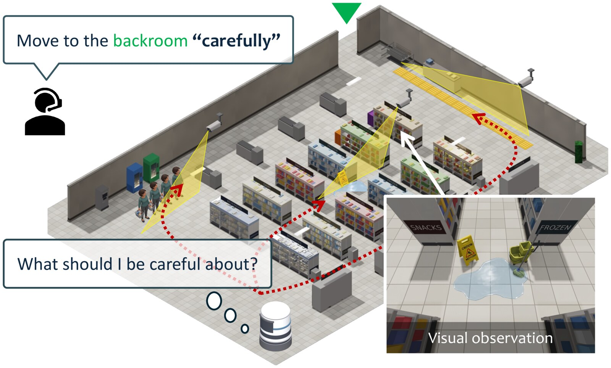

arXiv 2026
Commonsense-Grounded Path Planning from Abstract Instructions
arXiv preprint, 2026
We present commonsense ranked search (CoRS), a novel path planner that turns an abstract instruction into a route that follows commonsense. While existing methods respect the considerations written down in advance, a robot working among people must follow those left unstated too, as with a wet floor that a worker avoids without being told. CoRS leverages large language models (LLMs) and vision-language models (VLMs) as commonsense knowledge to reason about these latent considerations in its planning. Given an abstract instruction (e.g., “move carefully”) and visual observations of each region in the environment, CoRS derives a consideration for each region, as in “this wet floor is slippery and worth a detour.” It then compares the considerations between regions to see which of the two the robot should avoid more, as in “the crowd is worse than the wet floor.” These judgments sort the regions into a commonsense ranking, whose costs drive a conventional search that always returns a valid route. We build a benchmark for planning under latent considerations, with three environments, 1350 problems, and five instructions at three levels of abstraction. Experiments show that CoRS discovers the unstated considerations and goes around the ones worth a detour while crossing the rest, a behavior that recent LLM-based planners do not achieve.